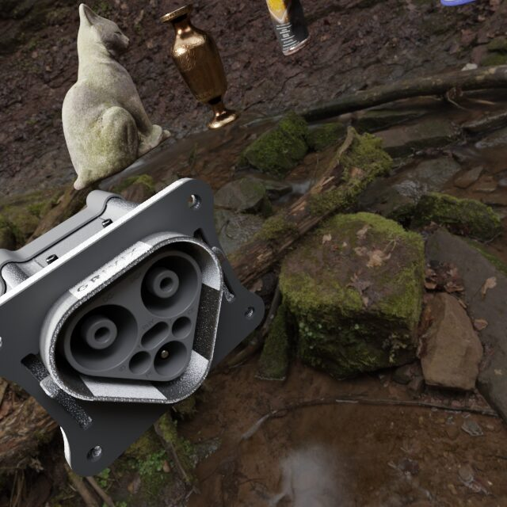
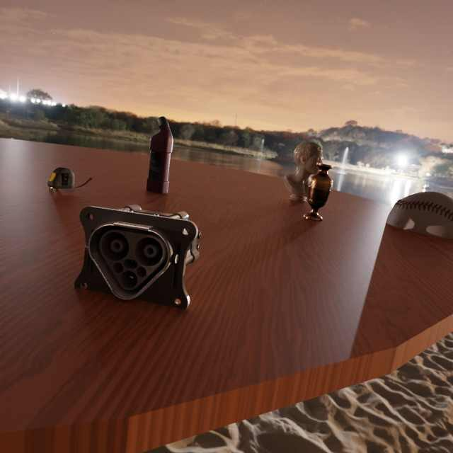
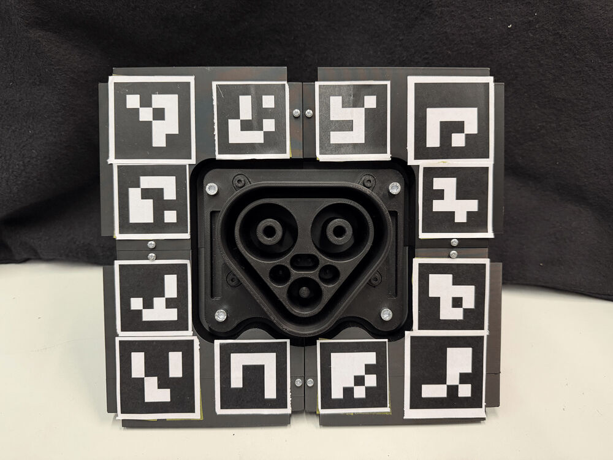
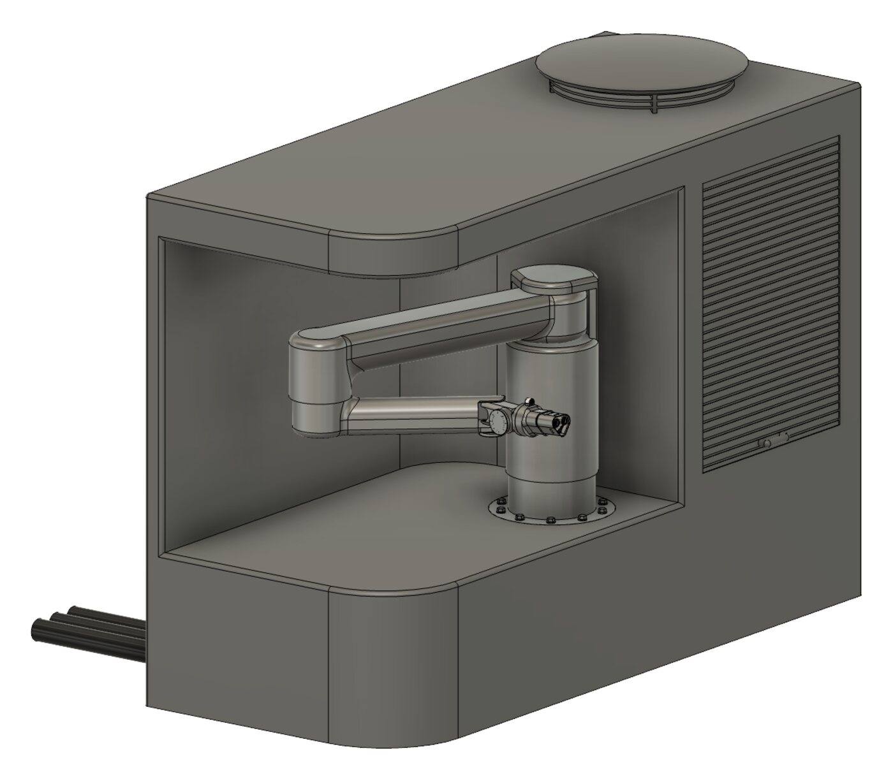

Master thesis · Grivix, Zurich10/2025 – 04/2026
Synthetic-only 6D pose estimation for robotic megawatt charging
Electric trucks charge at megawatt power through a connector with sub-centimetre tolerances, so plugging in is a job for a robot. I built a monocular RGB pipeline that learns the inlet's 6D pose only from CAD-generated images, then drives a UR5e arm to dock the charger.
- Photorealistic synthetic datasets in BlenderProc with domain randomization and sensor-effect injection
- YOLOv11-Pose keypoints with EPnP + RANSAC, closed-loop visual servoing
- ONNX export and TensorRT acceleration on a Jetson Orin AGX
- More than 300 fully autonomous docking trials on real hardware
1.77 mmtranslation error
4.5°rotation error
94%alignment success
40 mslatency, ≈25 FPS



